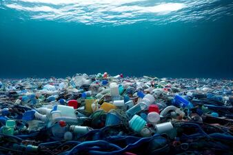

Plastik chiqindilar muammolari
Plastik materiallar uzoq vaqt davomida tabiiy muhitda parchalanmaydi, bu esa ekologik ta'sirlarga olib keladi.
- Plastik chiqindilarni to'plash va qayta ishlash zarur.
- Atrof-muhitga plastik chiqindilarning salbiy ta'siri katta.
- Yangi materiallarni ishlab chiqish va plastikni kamaytirish zarur.

Bosh sahifaga qaytish